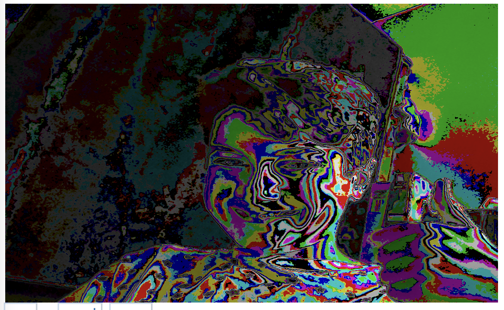
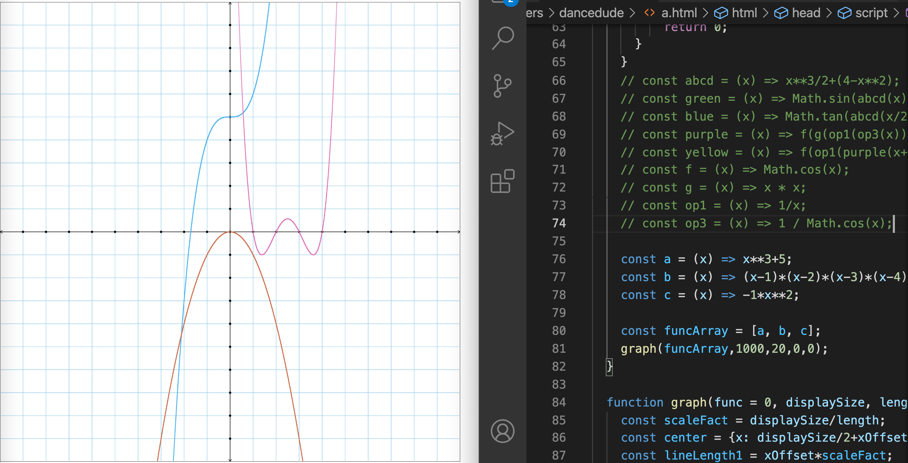

Homework Due July 4th
Happy Independence Day!
3. Use p5js to build something 3D that you haven’t done before. It could be a rotating donut, or a cat textured onto a cube … whatever creative idea you might have.
// this variable will hold our shader object
let theShader;
// this variable will hold our webcam video
let cam;
function preload(){
// load the shader
theShader = loadShader('assets/webcam.vert', 'assets/webcam.frag');
}
function setup() {
// shaders require WEBGL mode to work
createCanvas(710, 400, WEBGL);
noStroke();
cam = createCapture(VIDEO);
cam.size(710, 400);
// cam.hide();
}
function draw() {
// shader() sets the active shader with our shader
shader(theShader);
// passing cam as a texture
theShader.setUniform('tex0', cam);
// rect gives us some geometry on the screen
rect(0,0,width,height);
}

4. Invent 5 or more whacko functions that you haven’t done before, and put them all on the same graph. Hint: You’ve done functions plus / times / divided by other functions … have you tried functions of functions? Like f(x) = sin(x**2) … see what you can come up with.
const g0 = (x) => x**2;
const g8 = (x) => (x/3) ** 2;
const g7 = (x) => (x/2) **2;
const g6 = (x) => 2/x + x**2;
const g4 = (x) => (x/2)**2;
const g3 = (x) => x**2-7;
const g2 = (x) => (x**2)/7;
const g1 = (x) => x**2-x+3;
5. Identify the polynomial functions a, b, c in the screenshot. Prove that you have the right answer by graphing these using your own graph function.
const a = (x) => x**3+5;
const b = (x) => (x-1)*(x-2)*(x-3)*(x-4);
const c = (x) => -1*x**2;

6. Today we saw a graph of the function f(x) = (x-1)*(x-2)*(x-3)*(x-4) — recall that this is a fourth degree polynomial. Use the distributive property to multiply out those four parenthetical expressions so that you get something of the form f(x) = a*x**4 + b*x**3 + c*x**2 + d*x + e where a, b, c, d, e are all integers.
xxxx-10xxx-35xx-50x-24
(x-1)*(x-2)
x(x-1)-2(x-1)
xx-x-2x-2
x(xx-x-2x-2)-3(xx-x-2x-2)
xxx-xx-2xx-2x-3xx-3x-6x-6
x(xxx-xx-2xx-2x-3xx-3x-6x-6)-4(xxx-xx-2xx-2x-3xx-3x-6x-6)
xxxx-xxx-2xxx-2xx-3xxx-3xx-6xx-6x-4xxx-4xx-8xx-2x-12xx-12x-24x-24
xxxx-10xxx-35xx-50x-24
x4 - 10x3 - 35x2 - 50x - 24
8. Prepare some functions for the next time we do “guess the function”. Make them either easy or medium in difficulty.
Done, but not shown here as that would ruin the surprise.